This Hands-On Lab exercise is designed to help you master building data pipelines using Coalesce Marketplace. In this lab, you'll explore the Coalesce interface, learn how to easily transform and model your data with a variety of packages from Coalesce marketplace, understand how to build reporting pipelines, and play with real-time functionality.
What You'll Learn
- How to navigate the Coalesce interface
- How to add data sources to your graph
- How to prepare your data for transformations with Stage nodes
- How to join tables
- How to apply transformations to individual and multiple columns at once
- How to build out Dimension and Fact nodes
- How to make changes to your data and propagate changes across pipelines
- How to configure and build an ML Forecast node
By completing the steps we've outlined in this guide, you'll have mastered the basics of Coalesce and can venture into our more advanced features.
What You'll Need
- A Snowflake trial account
- A Coalesce trial account created via Snowflake Partner Connect
- Basic knowledge of SQL, database concepts, and objects
- The Google Chrome browser
What You'll Build
- A Directed Acyclic Graph (DAG) representing a real-time data pipeline leverage advanced Snowflake features.
To complete this lab, please create free trial accounts with Snowflake and Coalesce by following the steps below. You have the option of setting up Git-based version control for your lab, but this is not required to perform the following exercises. Please note that none of your work will be committed to a repository unless you set Git up before developing.
We recommend using Google Chrome as your browser for the best experience.
Note: Not following these steps will cause delays and reduce your time spent in the Coalesce environment. |
Step 1: Create a Snowflake Trial Account
- Fill out the Snowflake trial account form here. Use an email address that is not associated with an existing Snowflake account.
- When signing up for your Snowflake account, select the region that is physically closest to you and choose Enterprise as your Snowflake edition. Please note that the Snowflake edition, cloud provider, and region used when following this guide do not matter.

- After registering, you will receive an email from Snowflake with an activation link and URL for accessing your trial account. Finish setting up your account following the instructions in the email.
Step 2: Create a Coalesce Trial Account with Snowflake Partner Connect
Once you are logged into your Snowflake account, sign up for a free Coalesce trial account using Snowflake Partner Connect. Check your Snowflake account profile to make sure that it contains your fist and last name.
Once you are logged into your Snowflake account, sign up for a free Coalesce trial account using Snowflake Partner Connect. Check your Snowflake account profile to make sure that it contains your fist and last name.
- Select Data Products > Partner Connect in the navigation bar on the left hand side of your screen and search for Coalesce in the search bar.

- Review the connection information and then click Connect.

- When prompted, click Activate to activate your account. You can also activate your account later using the activation link emailed to your address.

- Once you've activated your account, fill in your information to complete the activation process.

Congratulations! You've successfully created your Coalesce trial account.
Step 3: Set Up The Dataset
- Within Worksheets, click the "+" button in the top-right corner of Snowsight and choose "SQL Worksheet."

- Navigate to the Marketplace HOL Data Setup File that is hosted on GitHub.
- Within GitHub, navigate to the right side and click "Copy raw contents". This will copy all of the required SQL into your clipboard.

- Paste the setup SQL from GitHub into your Snowflake Worksheet. Then click inside the worksheet and select All (CMD + A for Mac or CTRL + A for Windows) and Click "► Run".
- After clicking "► Run" you will see queries begin to execute. These queries will run one after another within the entire worksheet taking around 60 seconds.
Once you've activated your Coalesce trial account and logged in, you will land in your Projects dashboard. Projects are a useful way of organizing your development work by a specific purpose or team goal, similar to how folders help you organize documents in Google Drive.
Your trial account includes a default Project to help you get started. Click on the Launch button next to your Development Workspace to get started. 
You will need to add packages from Coalesce Marketplace into your workspace in order to complete this lab.
- Within your workspace, navigate to the build settings in the lower left hand corner of the left sidebar

- Select Packages from the Build Settings options

- Select Browse to Launch the Coalesce Marketplace

- You'll see a variety of packages available to install. For this lab, we'll be installing each of the packages listed here:
- External Data Package
- Dynamic Tables
- Cortex
- Incremental Loading
- Select the Find out more button on the External Data Package. This will open the details of the package

- Copy the package ID from the External Data Package page

- Back in Coalesce, select the Install button:

- Paste the Package ID into the corresponding input box:

- Give the package an Alias, which is the name of the package that will appear within the Build Interface of Coalesce. We'll be using the following aliases for each package in this guide:
- External Data Package: EDP
- Dynamic Tables: Dynamic-Tables
- Cortex: Cortex
- Incremental Loading: Incremental
- Continue to follow this process until all four packages have been installed.
Your Partner Connect Coalesce Account will come with two Storage Locations out of the box. We need to add one more to accomodate for some of the work we will be doing. In the setup of this guide, you will have run a SQL script in Snowflake that, among other things, created a stage and external volume. These two items will need to be mapped to a storage location in Coalesce so our packages can work with these objects.
- To add storage locations, navigate to the left side of your screen and click on the Build settings cog.

- Click the "Add New Storage Locations" button and name it STORE representing the data coming from your restaurant.

- Now map your storage location to their logical destinations in Snowflake. In the upper left corner next to your Workspace name, click on the pencil icon to open your Workspace settings. Click on Storage Mappings and map your STORE location to the MARKETPLACE_HOL database and the STORE schema. Select Save to ensure Coalesce stores your mappings.

- Go back to the build settings and click on Node Types and then click the toggle button next to View to enable View node types. Now you're ready to start building your pipeline.

- In the Browser within the Build Interface, select the + button in the upper left corner of the screen

- Select Add Sources. This will open the data sources modal which will display all of the obects available within each storage location you have configured.

- Within the STORE Storage Location that you configured in the previous step, you will see four tables available. Select all four of the tables and select Add 4 Sources

- There is an additional data source that is a JSON file that exists in an AWS S3 Bucket. To obtain this data source, we'll use our first Marketplace package. Select the + button again in the upper left corner and navigate to Create New Node -> EDP -> Copy Into.

- This will add a Copy Into node into your graph and immediately place you in the node. Rename the node to CUSTOMER_REVIEWS.

- On the right side of the node, open the Source Data dropdown within the Config Settings of the node.

- Toggle the Internal or External Stage toggle to on.

- Now you'll need to confiugre each of the parameters listed. For the Coalesce Storage Location of Stage, you will list the STORE storage location, as this is the database and schema that each object from the setup script was created within.

- For the Stage Name, you will use the name of the stage created in the setup script: store_data

- For the Path or Subfolder, you will pass through a path called json which is the folder containing the json data we wish to load.

- For the File Name(s), include the file name, which is named customer_reviews.json.
customer_reviews.json
- You do not need to include anything for the file pattern. Open the File Format dropdown next.
- You will keep the File Format Definition as File Format Name. For the Coalesce Storage Location, you will again use the STORE storage location.

- For the File Format Name, use the file format created in the setup script called JSONFORMAT

- As already discussed, the File Type is JSON, so select that from the File Type dropdown.

- Once complete, Create and Run the node.

Now that you have your data sources added into Coalesce, we can begin processing all of the data by building a preparation layer for the rest of our data pipeline. Specifically, we'll use some stage nodes to accomplish this for several of our tables.
- Because Coalesce uses nodes which represent templates or standards of objects, you can easily apply the same standard over and over again. Using the shift key, select the CUSTOMERS, MENU, and CUSTOMER_REVIEWS nodes and right click on either of them and select Add Node -> Stage.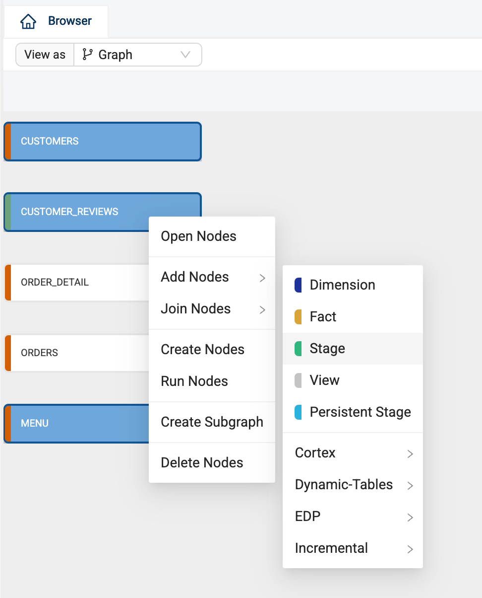
- Coalesce will automatically create stage nodes for each of the data sources. Double click on the STG_CUSTOMER_REVIEWS node to open it.

- You'll see that there is a VARIANT column containing all of the JSON data we loaded int the previous node. Coalesce provides a simple and powerful solution for parsing JSON and XML strings. Right click on the SRC column and select Derive Mappings -> From JSON.

- Coalesce will split out each of the key value pairs into their own columns with the associated data type. With the name columns available, we no onger need the original columns from the Copy Into node. Select the SRC column, hold down the shift key, and select the SCAN_TIME column. Right click on either of these columnes and select Delete Columns.

- You can apply data transformations at any point in Coalesce. Let's apply some column level transformations to these remaning columns. You may have noted that all of the columns names in other nodes are all upper case. To ensure consistency, let's do that to these columns as well. Again, using the shift key, select all of the columns, and right click on any column and select Bulk Edit.

- The bulk editor will open and all of the attributes available to be edited will be displayed. In this case, we'll choose Column Name.

- The SQL editor will be displayed, which allows you to write any SQL that will be applied to all of the columns. In this case, we'll use an identifier that allows Coalesce to resolve the SQL statement to each column name, while applying an UPPER function.
{{ column.name | upper }}
- With your SQL written in the SQL editor, select Preview to view the changes that Coalesce will make in bulk to your columns. Select Update to apply the changes.

- With your updates made, Create and Run the node to apply the changes to your object.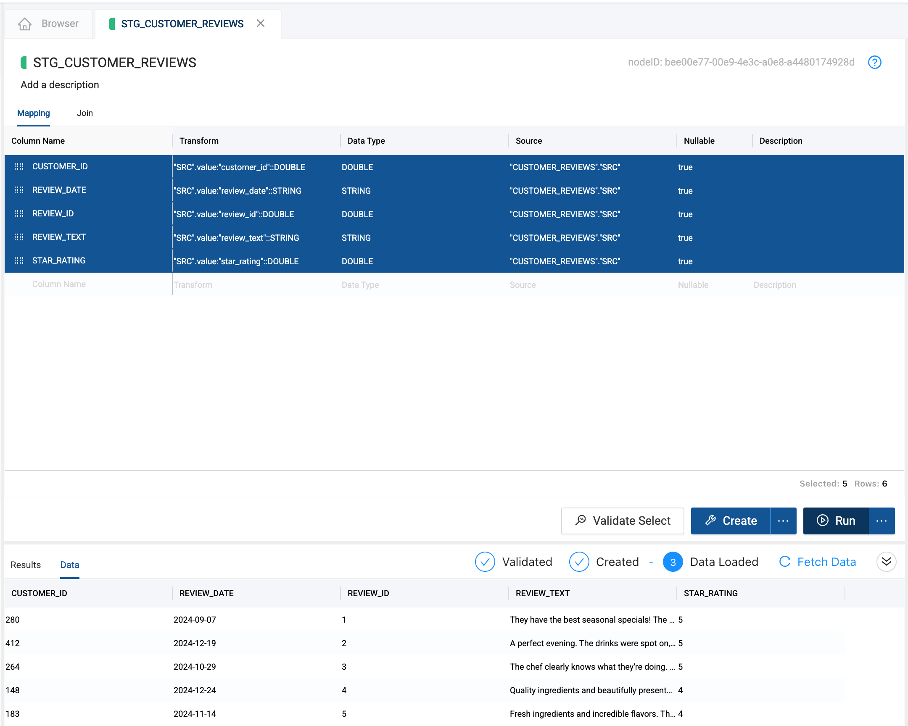
- You can also apply single column level transformations. Back in the Browser, double click into the STG_CUSTOMERS node.

- Let's create a new column and apply a transformation that allows us to determine the email domain of each of our customers. Double click on the Column Name at the bottom of the mapping grid. Call the column EMAIL_DOMAIN.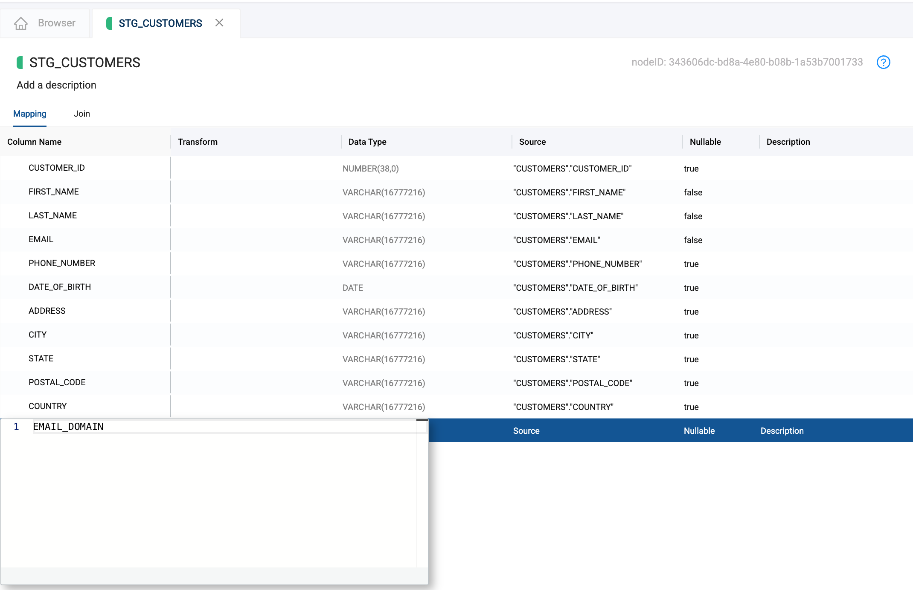
- Next, you'll need to supply a data type, in this case, use the
VARCHAR(50)data type and input this into the mapping grid.
- Now let's transform this column. To obtain the email domain, you can use the following SQL to the Transform column to apply the transformation.
SPLIT_PART("CUSTOMERS"."EMAIL", '@', 2)
- Create and Run all of the Stage Nodes to build and populate them with data in Snowflake.
For the rest of the staging layer, you will use Dynamic Tables to transform your data while leveraging real-time pipeline updates to your data. Let's begin.
- Using the shift key, select the ORDERS and ORDER_DETAIL tables, right click on either node and select Add Node -> Dynamic-Tables -> Dynamic Table Work Node. Coalesce will automatically add a Dynamic Table Work node to each data source.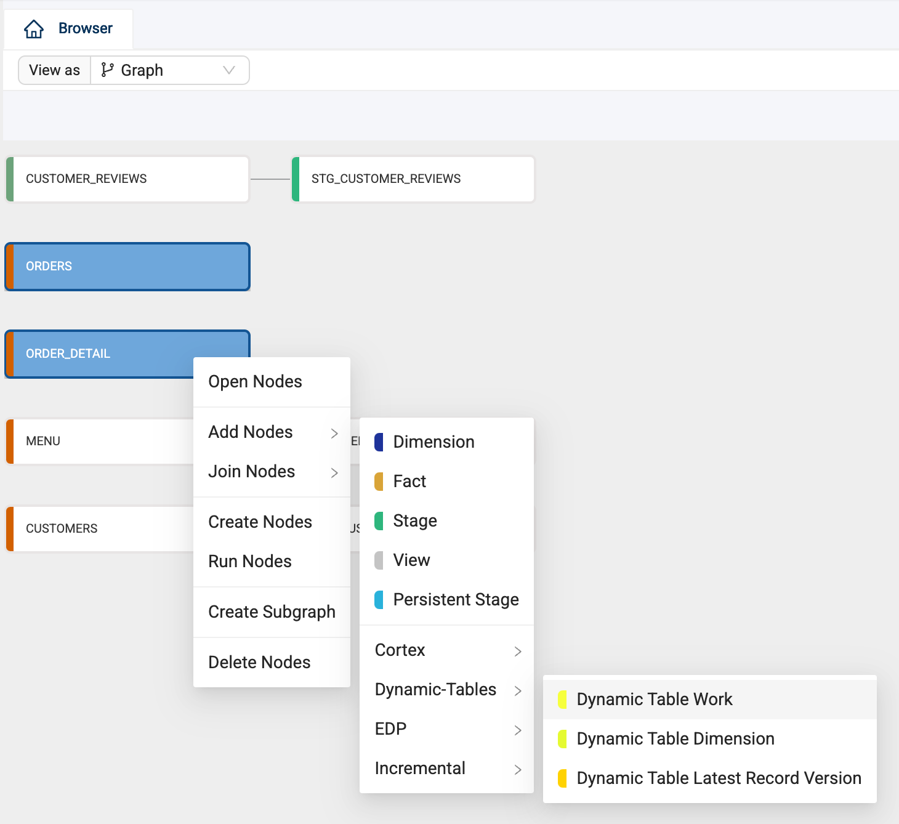
- Next, when using the Dynamic Table package, you need to use a parameter to configure the Dynamic Table warehouse. To do this, navigate to your workspace settings by clicking the gear icon in the upper left corner.

- Select Parameters, and copy and paste the following code into the Parameters editor. Select Save once complete.

{ "targetDynamicTableWarehouse": "DEV ENVIRONMENT" } - Navigate back to the Browser and double click on the DT_WRK_ORDERS table.

- Select the Dynamic Table Options dropdown on the right side of the node.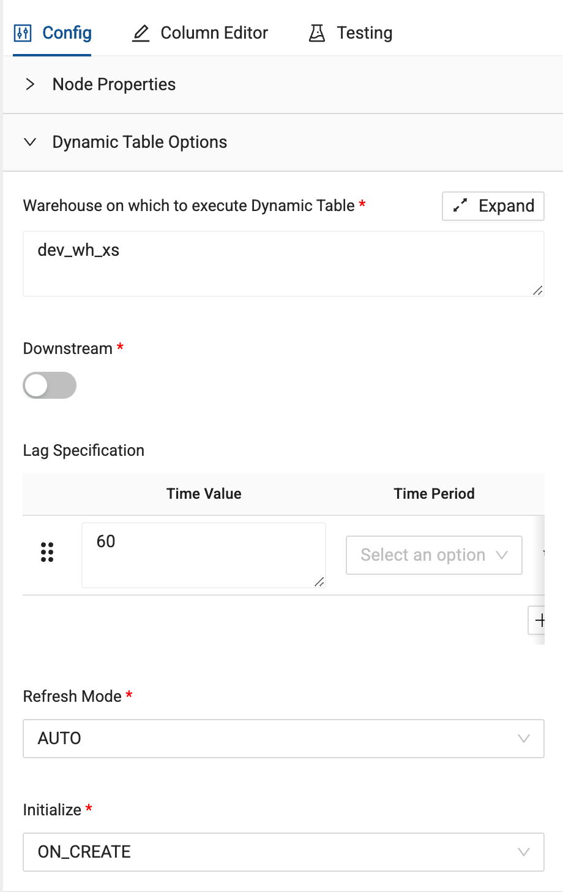
- For the Warehouse on which to execute Dynamic Table, input the warehouse that is available in your Snowflake account, or was created when running the setup script called compute_wh.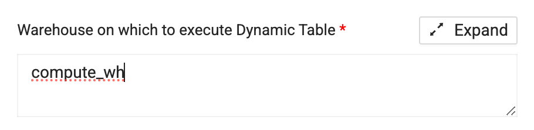
- Next, turn on the Downstream toggle to activate the ability for the table to automatically refresh based on the schedule of a downstream table refresh.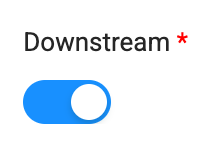
- Finally, in the General Options dropdown, toggle on the Distinct toggle to ensure only distinct order records are procesed.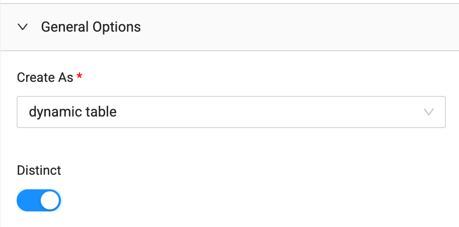
- Select Create to create the Dynamic Table.

- We'll configure the DT_WRK_ORDER_DETAILS node the same way.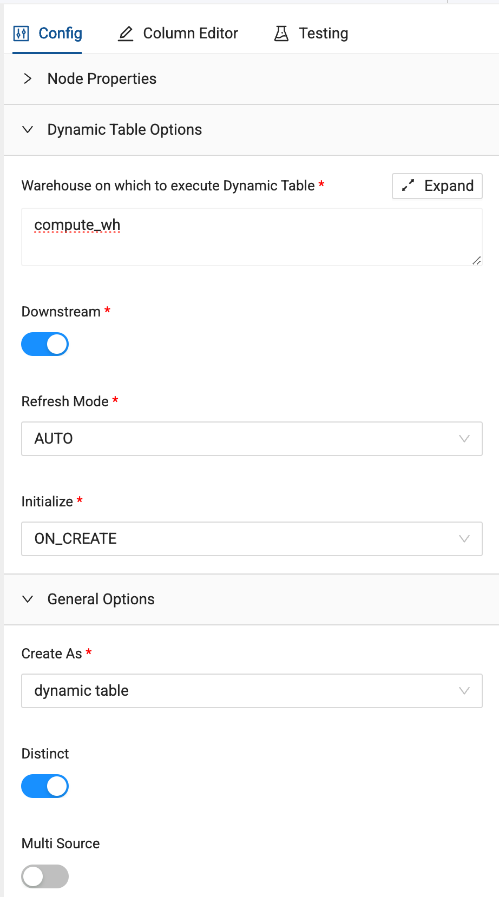
- Additionally, for the DISCOUNT_AMOUNT column, we'll apply some logic to simplify our discount policy. Use the following code to apply CASE WHEN logic to the column.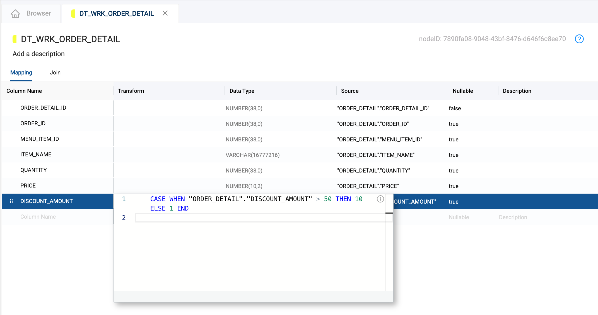
CASE WHEN "ORDER_DETAIL"."DISCOUNT_AMOUNT" > 50 THEN 10 ELSE 1 END - Select Create to create the Dynamic Table.
Now that you have built your processing layer, it's time to join some of these objects together to prepare data for further analysis.
- Using the shift key, select the STG_CUSTOMERS and STG_CUSTOMER_REVIEWS nodes and right click on either node and select Join Nodes -> Stage.

- This will create a new stage node which you will be placed within. To configure the join, navigate to the Join tab in the upper left corner of the mapping grid.

- Coalesce will automatically infer as much of the join as possible, but you will need to provide the join condition. In this case, you will be joining on CUSTOMER_ID from both nodes. You can either manually confiugre this, or copy and paste the code provided

FROM {{ ref('WORK', 'STG_CUSTOMER_REVIEWS') }} "STG_CUSTOMER_REVIEWS" INNER JOIN {{ ref('WORK', 'STG_CUSTOMERS') }} "STG_CUSTOMERS" ON "STG_CUSTOMER_REVIEWS"."customer_id" = "STG_CUSTOMERS"."CUSTOMER_ID" - Now that you have provided the join condition, rename the node to STG_CUSTOMER_MASTER.

- Navigate back to the mapping grid and delete one of the CUSTOMER_ID columns, as an object can't contain duplicate column names.

- Create and Run the node to create and populate the object.

- Next, let's join the Dynamic Table nodes together. We want this to be a real-time pipeline, so we'll use another Dynamic Table Work Node to join our nodes together. Select the DT_WRK_ORDERS and DT_WRK_ORDER_DETAIL nodes and right click on either node and select Join Nodes -> Dynamic-Tables -> Dynamic Table Work.

- You'll be placed inside of the new Dynamic Table node. Just as we did with the previous stage node, we can configure the join of this node exactly the same way. Navigate to the Join tab and, this time, we'll use ORDER_ID as the join condition. Which you can provide manually, or copy and paste the following code.

FROM {{ ref('WORK', 'DT_WRK_ORDERS') }} "DT_WRK_ORDERS" INNER JOIN {{ ref('WORK', 'DT_WRK_ORDER_DETAIL') }} "DT_WRK_ORDER_DETAIL" ON "DT_WRK_ORDERS"."ORDER_ID" = "DT_WRK_ORDER_DETAIL"."ORDER_ID" - Rename the node to DT_WRK_ORDER_MASTER.

- Navigate back to the mapping grid and remove one of each of the ORDER_ID and ORDER_DETAIL_ID columns.
- In the Dynamic Table Options dropdown, supply the warehouse you want this Dynamic Table to use. Again, we'll use compute_wh.

- For this Dynamic Table, leave the Downstream toggle off. Instead, we'll schedule this Dynamic Table to update ever 5 minutes. In the Lag Specification parameter, input 5 as the Time Value. For the Time Period, choose Minutes from the dropdown.

- Select Create to create the Dynamic Table object. You've now configured a pipeline of order data updating every 5 minutes.

You now have an order master table, producing data that is cleaned and unified. However, there is still more that can be done to allow your data team to process this data, especially large amounts of this data, in an efficient manner.
- Currently, you have a pipeline of Dynamic Tables updating every 5 minutes. You can use a view node to query this data as it is updating, so your entire team has insight into this data. To do so, right click on the DT_WRK_ORDER_MASTER node and select Add Node -> View. Create the Veiw.

- In an environment where data is updating in real-time, transactional tables containing data like orders data can become quite large and it is unrealistic to processes all of the data in the table every time it updates. In these situations, you can use incremental data loading. Let's learn how to do this by incrementally processing the data from your Dynamic Table pipeline, which only contains the last 30 days worth of data.Right click on the DT_WRK_ORDER_MASTER node and select Add Node -> Incremental -> Incremental Load.

- Incremental Load Nodes require you to have your data persisted down stream so that the node can incrementally load data into a table that has persisted data. Select the Create button in the Incremental Node you just created.

- Next, you need to create a table to persist the data from the incremental node. Right Click on the INC_ORDER_MASTER node in the Browser and select Add Node -> Persistant Stage.

- Using the options dropdown on the right side of the node, you use a business key to identify each order. In this case, it is a composite key of ORDER_ID and ORDER_DETAIL_ID.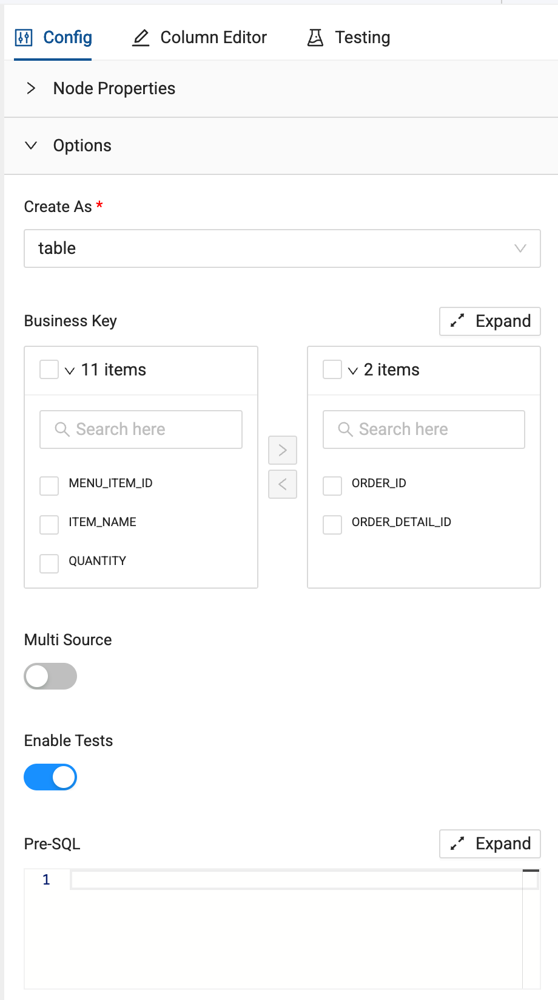
- Once configured, Create and Run the node to buid the object.

- With the persistant table created, you can finish configuring the incremental node you just created. Back in the Browser, double click on the INC_ORDER_MASTER tabe you created.

- Open the configuration options of the node on the right side of the screen and toggle on Filter data based on Persistent table. This will allow you to configure the node to incrementally filter and process data.

- Pass through the Persistent Table storage location to the incremental node, which in this case, is called WORK.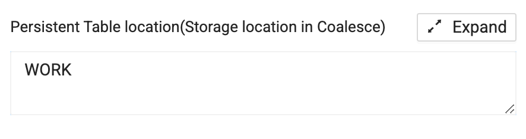
- Then, pass the persistent table name through as the table name parameter, called PSTG_ORDER_MASTER.

- Finally, you'll need to supply the data column used for incremental loading in the selector dropdown. In this case, choose ORDER_TS

- Once complete, navigate to the Join tab of the node and delete the line of code in the SQL editor.

- In the upper right corner of the SQL editor, you'll see the Generate Join tool. Select Generate Join and you'll see severa lines of SQL that Coalesce has automatically generated. This is the exact SQL needed to incrementally process your data based on the parameters that were just supplied to the node.

- Select Copy to Editor to copy the code into the SQL editor for you to reconfigure the dependency of the node as well as supply the incremental logic for the node.

- Once this is complete, Run the node. Now you have a view that is processing data incrementally and loading that incremental data into a persistent table.

So far, you've spent your time building pipelines with some of the more exciting packages from Coalesce Marketplace. But in the real world, not every use case needs you to use functionality like this. What happens when you need to create objects from standard requests, like creating Type 2 Slowly changing dimensions? Coalesce supports this functionality out of the box, without you having to write a single line of code.
- In the Browser, right click on the STG_MENU node and select Add Node -> Dimension.

- Select the options dropdown within the configuration on the right side of the screen.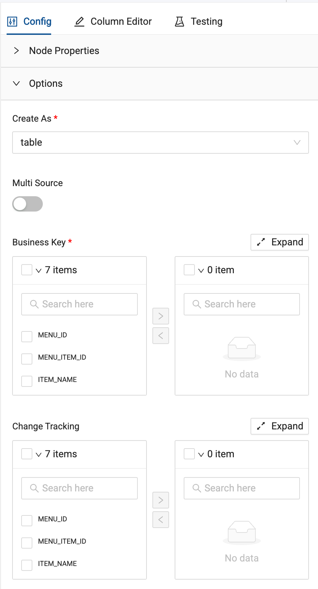
- You are required to supply a business key for a dimension node to work. In this case, we'll use a composite key of MENU_ID and MENU_ITEM_ID.

- Next, to configure a Type 2 Slowly Changing Diemnsion (SCD), select the columns you want to have changes tracked on. For this lab, choose the ITEM_NAME column to track changes on.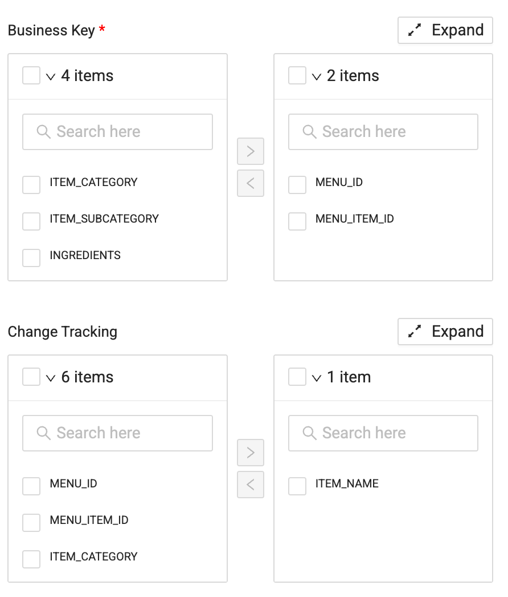
- Now Create and Run the node. Once you Run the node, view the code that was automatically generated for you in the Results panel.

You've processed your orders data and have built some nodes around your customer data, but now it's time to circle back to the STG_CUSTOMER_MASTER table to gain some more insights our of this data. Primarily, we want to generate a sentiment score for each of our customers, based on the reviews they have left us. Let's learn how to do this.
- In the Browser, right click on the STG_CUSTOMER_MASTER node and select Add Node -> Cortex -> Cortex Functions.

- In the Cortex Package options on the right side of the node, select the dropdown.

- Toggle on the SENTIMENT toggle.

- All Coalesce requires from you is to supply the column you want to generate a sentiment score from. In the mapping grid, select the REVIEW_TEXT column, right click on it, and select Duplicate Column.

- Double Click on the new column name and rename it to REVIEW_SENTIMENT.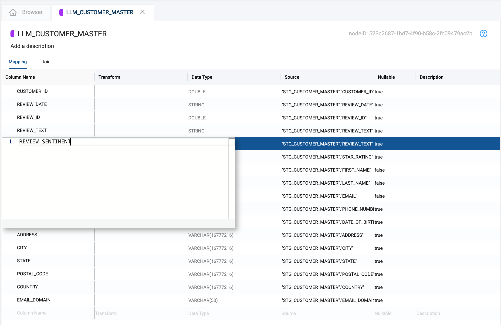
- With a new column available to use for our sentiment score, we can keep the original text. In the Column Name dropdown in the SENTIMENT toggle, select the REVIEW_SENTIMENT column.

- Create and Run the node to view the results and see how easy Coalesce makes it to work with Cortex functions in Snowflake.

Now that you have an object that is creating a sentiment score about your customers reviews, the next thing you will do is create a Fact table that will store the measures about customers: in this case average review and average sentiment. Let's learn how to do this.
- If it's not still open, double click into the LLM_CUSTOMER_MASTER node you created in the previous section.

- Holding the
commandorwindowskey, select the CUSTOMER_ID, REVIEW_SENTIMENT, and STAR_RATING columns in the mapping grid.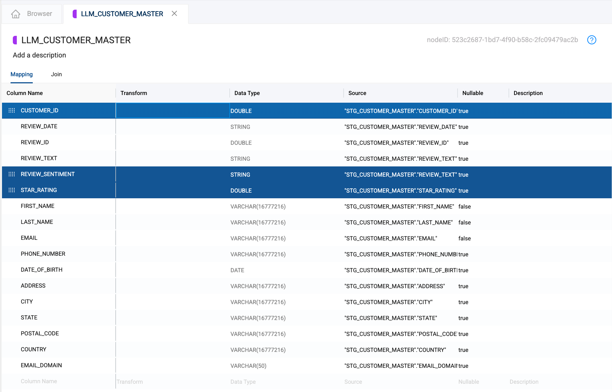 - Right click on either of the highlight columns and select Add Node -> Fact. Coalesce will automatically create a new node that contains just these three columns.

- We want to apply aggregate functions to this data to determine average sentiment score and star rating, as some customers have reviewed multiple menu items from our restaurant. You can use the same function to apply this transformation. For the REVIEW_SENTIMENT column, double click into the Transform column and supply the SQL statement here:

AVG({{SRC}}) - Apply the same transformation to the STAR_RATING column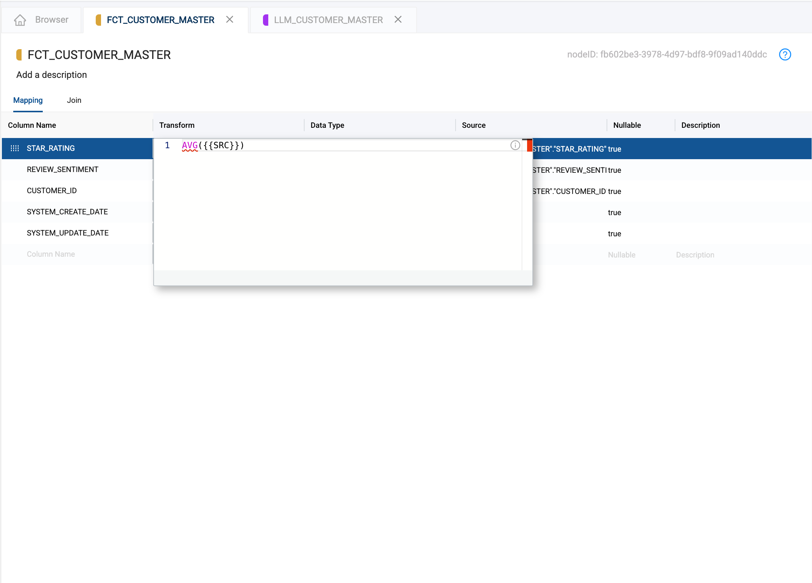
AVG({{SRC}}) - Since you are using aggregate functions in an object, you will need to supply a GROUP BY. Navigate to the Join tab, and add a new line to the SQL editor. Add the SQL code here:

GROUP BY ALL - Create and Run the node to build the object and populate it with data.

So far, you've used packages from Coalesce Marketplace to create a pipeline that lerverages different functionality that is fully managed by the nodes you've added to the pipeline. You've also created various objects that can be joined together to provide a holistic view of your data. Let's create a reporting object that brings together your order data, menu data, and customer data.
- Holding down the shift key, in the browser, select the PSTG_ORDER_MASTER, FCT_CUSTOMER_MASTER, and DIM_MENU nodes (MAKE SURE TO SELECT THE NODES IN THE ORDER LISTED HERE). Right click on any of the selected nodes and select Join Nodes -> View.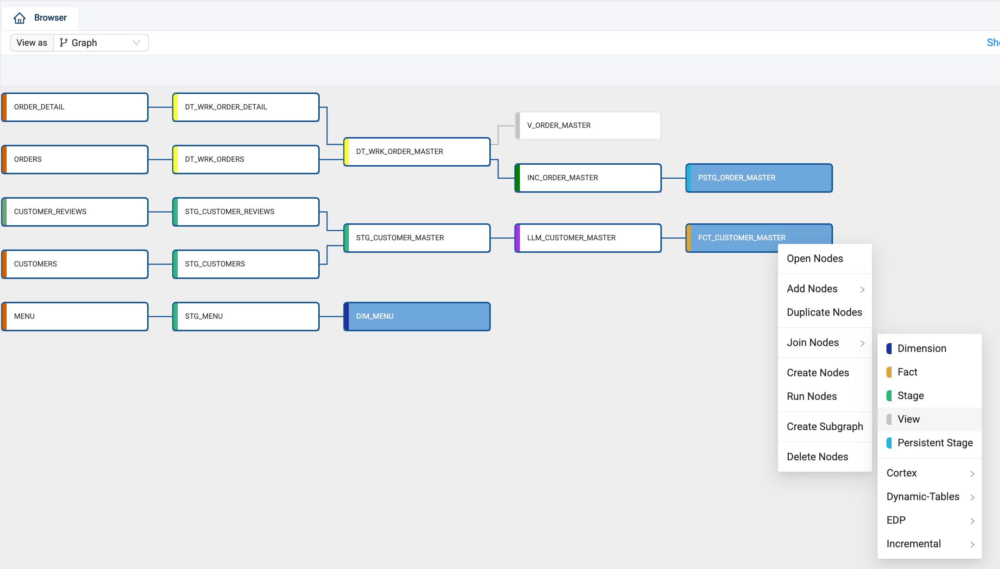
- Coalesce will place you in the node. Rename the node V_REPORT_MASTER.

- Next, navigate to the join tab and configure manually, or use the following SQL to complete the join condition:

FROM {{ ref('WORK', 'PSTG_ORDER_MASTER') }} "PSTG_ORDER_MASTER" INNER JOIN {{ ref('WORK', 'FCT_CUSTOMER_MASTER') }} "FCT_CUSTOMER_MASTER" ON "PSTG_ORDER_MASTER"."CUSTOMER_ID" = "FCT_CUSTOMER_MASTER"."CUSTOMER_ID" LEFT JOIN {{ ref('WORK', 'DIM_MENU') }} "DIM_MENU" ON "PSTG_ORDER_MASTER"."MENU_ITEM_ID"= "DIM_MENU"."MENU_ITEM_ID" - Next, select the Column Name header to alphanumerically sort the column names in the node. Using the shift key, select all of the
SYSTEM_columns and delete them from the node.
- Next, you will need to remove any duplicate columns names from the node as an object cannot contain duplicate column names. Remove one of the columns for each of the following column names:
- CUSTOMER_ID
- ITEM_NAME
- MENU_ITEM_ID

- Select the Create button to create the view.

Congratulations on completing your lab. You've mastered working with Coalesce Marketplace and extending the functionality of your data pipelines. Be sure to reference this exercise if you ever need a refresher.
We encourage you to continue working with Coalesce by using it with your own data and use cases and by using some of the more advanced capabilities not covered in this lab.
What You Learned
- How to navigate the Coalesce interface
- Configure storage locations and mappings
- How to add data sources to your graph
- How to prepare your data for transformations with Stage nodes
- How to join tables
- How to apply transformations to individual and multiple columns at once
- How to build real-time data pipelines and work with Dynamic Tables
- How to configure and understand Cortex functions node
Related Resources
Reach out to our sales team at coalesce.io or by emailing sales@coalesce.io to learn more.